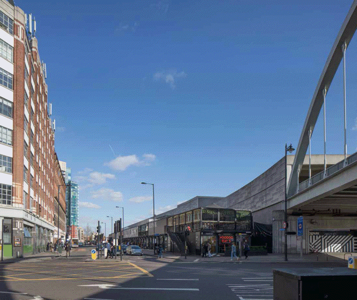
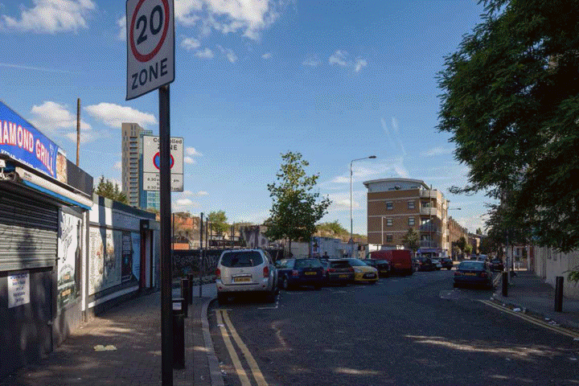
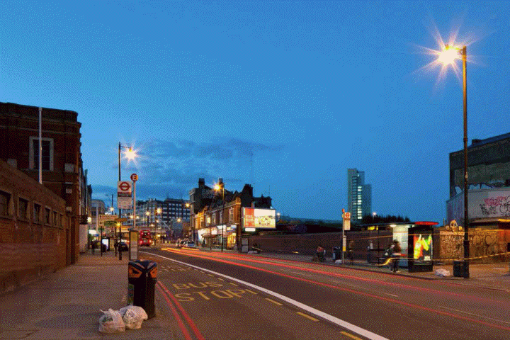

PLANNING
APPLICATION
2020
STOP THE MONSTER
STOP
THE
MONSTER
WHAT
YOU
CAN DO
WHAT YOU CAN DO
1
OBJECT TO THE
APPLICATION
how to object [pdf]
2
FOLLOW US
ON TWITTER
3
TELL YOUR
NEIGHBOURS
spread the word
You can view the
2019 Planning Application
documents on the
London Datastore
Other campaign documents: have your say [pdf] stop the monster [pdf]
For more information
and to join our
mailing list, contact
northweavers [at] gmail.com
BISHOPSGATE GOODSYARD

Reclaim the Bishopsgate Goodsyard: Public Land for the East End
For London to thrive we need to house Londoners, keeping a diverse population at its centre at all levels of the economy. But over the past 20 years the City of London has expanded outward and upward, while East End residents and traders have been driven out by escalating rents and unaffordable homes.
 The Bishopsgate Goodsyard is public land owned by Network Rail. Covering 10 acres, it is the largest brownfield site in inner London, yet it has sat empty since a fire in 1964. We want it to be used for public good, through an exemplary development addressing the capital’s housing crisis, as well as serving small businesses and the local community.
The Bishopsgate Goodsyard is public land owned by Network Rail. Covering 10 acres, it is the largest brownfield site in inner London, yet it has sat empty since a fire in 1964. We want it to be used for public good, through an exemplary development addressing the capital’s housing crisis, as well as serving small businesses and the local community.
 The Goodsyard should serve the needs of the East End, not just add to the number of redundant city offices and luxury investment flats. It offers a unique opportunity to deliver an innovative world class solution that will become an inspiration for Londoners, just as the neighbouring Boundary Estate started a revolution in public housing a century ago.
 We demand public authorities rise to the challenge to create a visionary, lasting and environmentally responsible scheme for this site. Public land is increasingly scarce and needs to be valued. Let the people develop a new urban ecosystem here and return the East End to its glory.
We demand public authorities rise to the challenge to create a visionary, lasting and environmentally responsible scheme for this site. Public land is increasingly scarce and needs to be valued. Let the people develop a new urban ecosystem here and return the East End to its glory.



